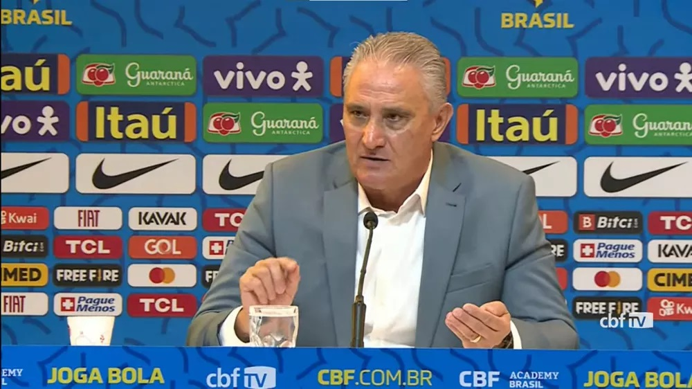
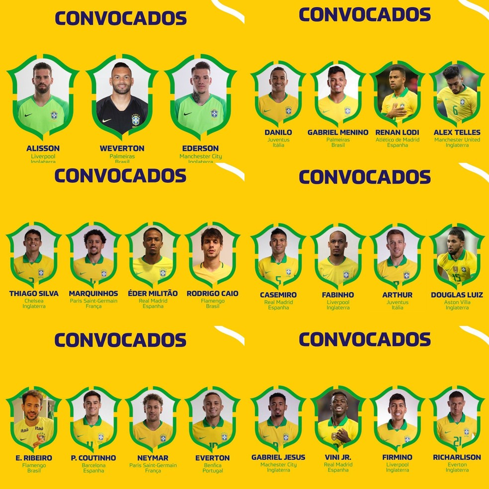

Seleção Brasileira irá para seu último teste antes da convocação oficial
para a Copa do Mundo de 2022.Nesta terça-feira, a Canarinha encara
a seleção da Tunísia em novo amistoso e o técnico Tite entrará em campo
com diversas mudanças.A principal mudança deverá ser na função de Neymar
em campo. Contra a Gana, o camisa 10 atuou centralizado, mas deve retornar
à ponta esquerda, como vinha jogando nas Eliminatórias.
O técnico Tite fez diversos testes para o time titular, na movimentação
desta segunda-feira. Um desses testes foi a entrada de Éverton Ribeiro
entre os 11 iniciais, além da presença de Ibañez e do atacante Pedro na
titularidade do time de Tite. A equipe foi testada dessa forma: Alisson;
Ibañez, Eder Militão, Thiago Silva e Alex Telles; Casemiro, Lucas Paquetá
e Everton Ribeiro; Antony, Neymar e Pedro.